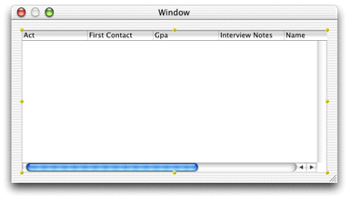
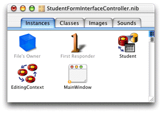
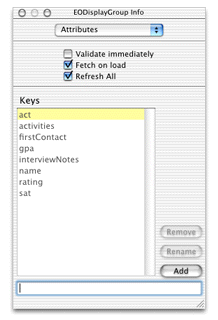

Open the Admissions.eomodeld from
within the Admissions project to launch EOModeler. Then drag the
Student entity from EOModeler into the main window in Interface
Builder. The main window should then appear as in Figure 6-8.
Figure 6-8 The Student entity dragged into Interface Builder
In the nib file window, there's now an EODisplayGroup object named "Student." The first display group you add to the model also adds an EOEditingContext object to the nib file window. The nib file window should appear as in Figure 6-9.
Figure 6-9 Display group and editing context
You can set options for the Student display group by selecting it in the nib file window and choosing Show Info from the Tools menu. In the Attributes pane, make sure "Fetch on load" is selected as shown in Figure 6-10. This option is important because it allows data to be fetched from the database when the application starts up.
Figure 6-10 Display group options in Interface Builder
The keys listed in the EODisplayGroup Info window correspond to the class properties specified for the entity in EOModeler. You can add other keys that are not class properties such as methods you define in the associated Enterprise Objects class, as is done in "Task: Using Pop-up Menus In Nib Files".
By dragging an entity from EOModeler into Interface Builder, you created a functional yet simple application. However, you should make some simple changes to improve it.